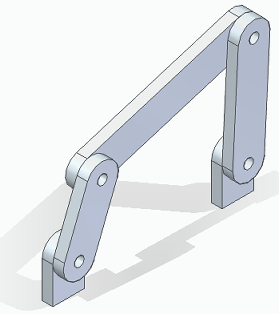
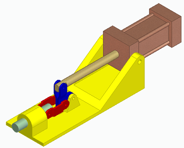
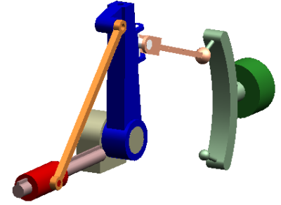
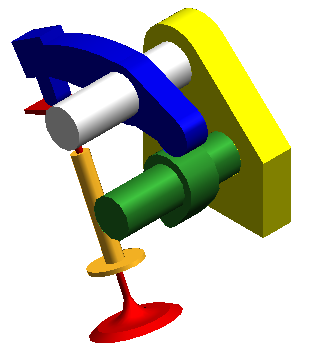
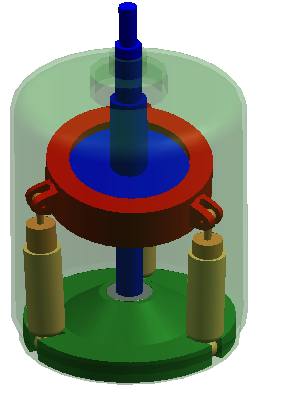
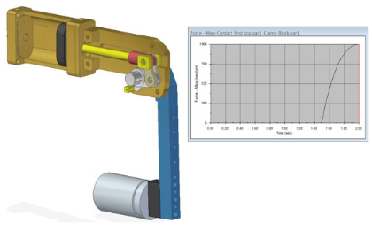

Learn to use Solid Edge Motion
There are two sets of resources for learning how to use Solid Edge Motion: one for basic motion and another for dynamic motion simulation.
Basic motion
Use the following resources to learn how to use the basic motion simulation capabilities of Solid Edge Motion.
- Solid Edge Simply Motion Help
-
Look for the Solid Edge Simply Motion help file, smse.chm, which is installed with Solid Edge. The default location is the C:\Program Files\Siemens\Solid Edge 2023\Program\ResDLLs\0009 folder.
- Solid Edge Simply Motion Tutorials
-
Two tutorials are included in the help file:
-
Tutorial 1 Four Bar Linkage—Teaches the basic operation of the Motion Builder.
Look for the training model in the C:\Program Files\Siemens\Solid Edge 2023\Training\Four Bar folder.

-
Tutorial 2 Toggle Clamp—Teaches motion simulation for a more complicated model. An animation is also generated. The motion model is built using the Motion Browser, although the Builder used in Tutorial I could also be used.
Look for the training model in the C:\Program Files\Siemens\Solid Edge 2023\Training\actuator clamp folder.

-
Dynamic motion simulation
If you have a Solid Edge Simulation license or a Solid Edge Premium license, use these resources to learn basic motion and dynamic motion simulation.
- Solid Edge Motion Help
-
Look for the Solid Edge Motion help file, ddmse.chm, which is installed with Solid Edge. The default location is the C:\Program Files\Siemens\Solid Edge 2023\Program\ResDLLs\0009 folder.
- Solid Edge Motion Tutorials
-
Four tutorials are included in the help file:
-
Tutorial 1 Crank Slider—This exercise uses the motion builder to configure the mechanism and check for interference.
Look for the training model in the C:\Program Files\Siemens\Solid Edge 2023\Training\Crankslider folder.

-
Tutorial 2 Valve Cam—This tutorial demonstrates the application of motion simulation to intermittent contact problems. You analyze an engine overhead cam system to determine the spring stiffness required to prevent the rocker from losing contact with the cam.
Look for the training model in the C:\Program Files\Siemens\Solid Edge 2023\Training\valvecam folder.

-
Tutorial 3 Wobble Pump—This tutorial builds on the operations you performed in earlier tutorials, and introduces using the Motion Browser for defining the mechanism and setting the size of the motion simulation symbols. This tutorial also contains a model with true 3D motion. You use the Motion Browser to build a motion model from the assembly model, simulate the model, and then create an animation of the pump motion.
Look for the training model in the C:\Program Files\Siemens\Solid Edge 2023\Training\wobble_pump

-
Tutorial 4 Load Transfer—The objective of this exercise is to perform a kinematic analysis on a clamp mechanism, and then transfer the time-based loading data to a Solid Edge Simulation study for dynamic structural analysis.
Look for the training model in the C:\Program Files\Siemens\Solid Edge 2023\Training\load_transfer_to_SE_Simulation folder.

-